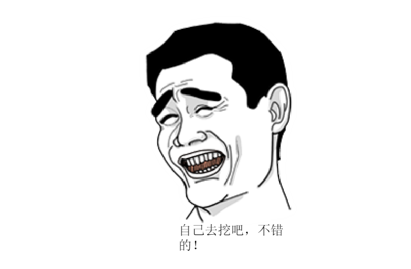

text2vec(自查学习)
text2vec包是由Dmitriy Selivanov于2016年10月所写的R包。此包主要是为文本分析和自然语言处理提供了一个简单高效的API框架。由于其由C++所写，同时许多部分（例如GloVe）都充分运用RcppParallel等包进行并行化操作，处理速度得到加速。并且采样流处理器，可以不必把全部数据载入内存才进行分析，有效利用了内存，可以说该包是充分考虑了NLP处理数据量庞大的现实。
text2vec包也可以说是一个文本分析的生态系统，可以进行词向量化操作（Vectorization）、Word2Vec的“升级版GloVe词嵌入表达、主题模型分析以及相似性度量四大方面，可以说非常的强大和实用。详情可见官网
说明文档：https://cran.r-project.org/web/packages/text2vec/text2vec.pdf
